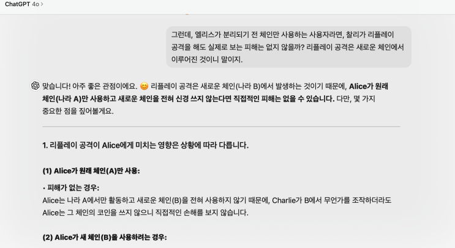
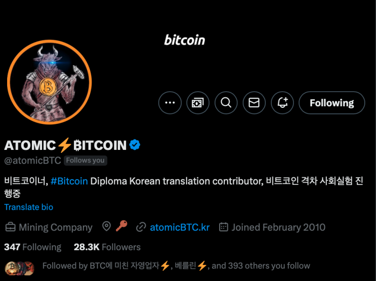
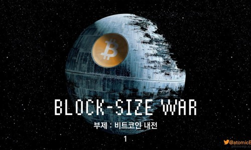
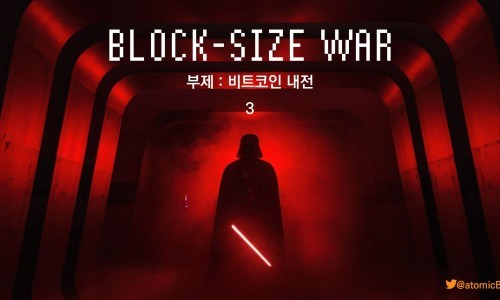
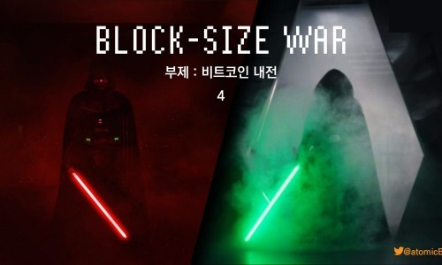
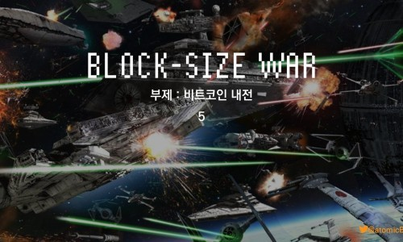

얼마전 네딸바님이 번역하신 '비트코인 블록사이즈 전쟁' (이하 '블록사이즈워')를 다 읽어 보았습니다. 23년에 한 차례 트
위터 스페이스에서 네딸바님을 통해 한 바뀌 돈 책이었기 때문에 대략 그 내용은 알고 있었습니다만, 또 막상 제가 사서 텍
스트로 읽으니참 다르게 느껴졌습니다. 아울러 이번엔 책 안에 나오는 여러가지 기술적인 내용들에 대해 정확한 이해를 위
해 인공지능과 토론를 주거니 받거니 하면서 읽었는데, 이전에 피상적으로 알고 있던 것 보다 훨씬 더 깊게 이해할 수 있는
좋은 방법이었습니다. 앞으로도 인공지능과 함께 책을 읽어나가는 방식을 기본으로 삼아야 겠습니다.

쳇지피티와 블록사이즈워 주요 키워드인 리플레이 공격에 대해서 논의하는 모습
책은 과거 비트코인 역사에 있었던 '블록사이즈 전쟁' 에 대해서 저자인 '조나단 비어' 분이 자신이 공부한 것과 실제 경험
한 것들을 바탕으로 쭉 써내려가는 형식의 전쟁 역사서 입니다. 아무래도 개인이 보고 듣고 공부한 것을 바탕으로 적어 내
려간 것이기에 정확한 객관적 사실 보다는 개인의 판단 가치가 많이 들어가긴 하지만, 어떠한 역사서도 이러한 비판은 피
해갈 수 없겠죠. 그러나, 오히려 로마시대 전사에 대한 내용 처럼 문헌이나 기록이 한정되어 있고 저자가 직접 본 적도 없
는 전통 역사서 보다는 비
트코인 포럼이나 레딧이나 이메일, 디스코드 대화 등으로 정확히 기록이 남아있는 '블록사이즈
워' 에 대해서 기술한 이 책이 훨씬 정확하고 객관적일 것
이란 생각이 듭니다.
블록사이즈워는 1MB로 제한되어 있던 비트코인 블록 사이즈(거래 내용을 담는 장부의 크기)를 더 늘릴 것인가 말 것인가
를 두고 유지해야 한다고 주장하는 '스몰블록커' 들과 적극적으로 늘려야 한다는 '빅블록커' 들 간의 2년여의 갈등을 총칭
하는 것으로 핵심적인 내용은 아래 '아토믹 비트코인' 님의 웹사이트에서 보실 수 있습니다.

소머리 형님 트위터

X의 ATOMIC???ITCOIN님(@atomicBTC)
[#bitcoin BLOCK-SIZE WAR (블록사이즈 전쟁)] 전쟁의 서막 2015.8.15 비트코인XT (@BTCFoundation 비트코인 파
운데이션 @mikehearn @jgarzik @gavinandresen 가 주도)을 공개. 1M 블록 사이즈를 8M까지 확장할수 있는 프로그
램. 합의(컨센서스)를 무시한채 새 규칙을 발표.
X의 ATOMIC???ITCOIN님(@atomicBTC)
[#bitcoin BLOCK-SIZE WAR (블록사이즈 전쟁)] @neoran97 님의 NEXT MONEY를 일부 참고하였음 (?) #Segwit 으
로 해결된 것같았으나 2016년이 되자마자 전쟁은 시작됬음. 비트코인XT 의 @mikehearn @jgarzik 은 #Segwit 은 눈속
임이라 비난. https://t.co/FEegi36ZNI

X의 ATOMIC???ITCOIN님(@atomicBTC)
[#bitcoin BLOCK-SIZE WAR (블록사이즈 전쟁)] @neoran97 님의 NEXT MONEY를 일부 참고하였음 (?) @JihanWu
등장(@AntPoolofficial 에서 bitcoin Unlimited 블록을 채굴하기 시작) @rogerkver 와 합세하였으니 판세가 뒤엎어 졌
다. 여기서 끝이 아님.

X의 ATOMIC???ITCOIN님(@atomicBTC)
[#bitcoin BLOCK-SIZE WAR (블록사이즈 전쟁)] @neoran97 님의 NEXT MONEY를 일부 참고하였음 (?) Segwit2X
합의는 채굴풀, 수십개의 회사들이 동의하였고 @JihanWu 또한 그자리에 있었음. 그런데 비트코인 코어개발자는 한명도
참여하지 않았음. https://t.co/aCHa50d99X

X의 ATOMIC???ITCOIN님(@atomicBTC)
[#bitcoin BLOCK-SIZE WAR (블록사이즈 전쟁)] @neoran97 님의 NEXT MONEY를 일부 참고하였음 (?) 2017.8.1
478,558블록에서 체인분리가 시작됨. $100인 비트코인캐시는 $800 까지 치솓고 내려오는등 pump&dump가 시작됨.
https://t.co/xxwzy0UGaZ
빅블로커, 스몰블로커 모두 관계 없이 비트코인 초기에 비트코인의 가치를 먼저 남들보다 알아보고 함께 협력했던 사람들
입니다. 하지만 왜 이들은 그저 블록사이즈 라는 것 때문에 이토록 오랫동안 혈투를 벌였던 것일까요. 블록사이즈라는 것
이 이름처럼 단순한 기술적 문제였다면 이러한 심각한 갈등 (결국 실력 행사를 통해 비트코인이 하드포크 되고 사용자간
서로 금융 공격을 하는 사태까지 일어남)이 일어나지 않았을 것입니다.
사실 이러한 갈등의 기저에는 '누가, 왜, 어떻게 비
트코인을 통제하는가' 에 대한 사상적 차이가 깔려 있었습니다
. 즉 이 전쟁은 단순한 블록사이즈라는 기술적 논의에서 촉
발되었지만 사실은 저 깊은 곳에 깔려있던 비트코인에 대한 믿음에 대한 전쟁, 즉 종교전쟁이었다는 의미입니다.
다들 종교전쟁이라는 것이 얼마나 격렬한지 아실 겁니다. 종교전쟁의 잔학성은 기독교와 이슬람의 전쟁과 같은 이 종교 뿐
만 아니라, 유럽(특히 독일)을 개발살 냈던 신교와 구교 사이의 30년 전쟁 처럼 같은 믿음을 가진 기독교 내에서도 매우 격
렬한 양상을 보입니다.
십자군 전쟁
십자군 전쟁 ( ? ? ? ? ? , Expeditio Sacra 교회 라틴어로 '엑스페디치오 사크라', 곧 성전,
namu.wiki
30년 전쟁
독일어 : Dreißigj
ä
hriger Krieg 스웨덴어 : Trettio
å
riga kriget 스페인어 : Gu
namu.wiki
빅블로커와 스몰블로커의 격렬한 종교적 투쟁을 일으켰던 양진영의
비트코인에 대한 믿음의 차이
를 간단히 표로 정리하면
아래와 같았습니다.
빅 블로커
스몰 블록커
비트코인이란 무엇인가?
비자/마스터 등과 경쟁하는
최신 기술의
온라인 결제망
기존 fiat 시스템을 무너뜨릴
'통제받지
않는 돈'
비트코인의 규칙은 어떻게 바뀌어야 하
는가?
사용자 편의성과 비트코인의 효과적인
보급을 위해
필요한 변화를 적극적으로
받아들여야 함
비트코인 이해관계자의 폭넓은 지지를
받을 때만 아주 예외적으로 바꾸어야 하
고
기본적으로는 불변
비트코인의 규칙은 누가 바꿀 수 있는
가?
실제 목숨걸고 돈을 투입하면서 skin in
the game을 하고 있는
비트코인 거래
소, 채굴자 등 사업가들
이 이러한 권한
을 가지고 있다고 생각
아무도 그러한 권한을 가지고 있지 않
음.
오직
네트워크 노드
들의 합의만이 규칙
을 바꾸게 됨
사람은 언제나 세상을 흑과 백, 선과 악
, 철수와 영희로
과 같은 이분법으로 나누는 성향이 있는데, 책을 읽으면 빅블로커
들을 자본의 앞잡이와 같은 악으로, 스몰블로커들을 자유를 수요하는 선으로 오해하기 쉽지만 사실 조금만 생각해보면 두
입장 모두 이해는 됩니다.
그저 말 그대로 세상을 바라보는 관점, 특히 비트코인이라는 완전히 새로 나온 위대한 발명을 바라보는 관점이 달랐을 뿐
입니다. 지금의 똥코인들의 양심 팔아먹는 행동을 보면 이런 빅/스몰블록커들 간의 전쟁은 그야말로 아름다운(?) 전설에
나 나올만한 영웅들의 행동에 가깝습니다.
야인시대 때는 건달은 연장을 쓰지 않았다고!
책은 이러한 전쟁사를 총 21 챕터(!) 에 걸쳐서 정리하는데, 내용 자체가 길지는 않아서 금방 읽으실 수 있을 겁니다. 내용
도 스릴러 소설과 비슷한 형태를 차용하고 있다보니 참 재미있습니다. 영화 빅쇼트를 좋아하셨다면 이 책의 구성도 다분히
마음에 드실 겁니다.
다만 내용이 비트코인이나 금융 네트워크를 이해하지 못하시는 분이 보시면 상당히 어려울 수가 있습니다. 따라서 다른 공
부를 충분히 하신 후 보시거나, 모르는 부분에 대해서 인공지능 도우미와 함께 공부해나가시면서 배우는 것을 추천합니다.
제가 이 책을 읽으면서 가장 감명 깊었던 것은 그레고리 맥스웰의 BIP-148 반대 이메일과 맨 마지막 장에 적혀 있는 저자
의 이야기 입니다. 이 두 내용을 블로그에 다시 담는 것을 끝으로 이번 독후감은 마치겠습니다.
다시한번 한국에 이런 양서를 번역해주신 네딸바 님께 감사의 말씀을 드립니다.
네딸바 NL daughter's daddy
비트코인에 대한 제대로된 이해를 돕는 채널입니다 https://twitter.com/nldd21
www.youtube.com
저는 BIP-148을 지지하지 않습니다. 그 이유는 세그윗을 지지하는 이유와 동일합니다. 비트코인의 가치는 높은
수준의 보안성과 안정성에서 나옵니다. 세그윗은 먼 미래에 이르러서도 여전히 신뢰받을 수 있는 공학적 무결성
을 달성하기 위해 매우 신중하게 설계되었 습니다.
그러나 BIP-148의 접근 방식은 그런 기준에 부합하지 않습니다. 세그윗에 적용된 표준이나, 비트코인 커뮤니티
가 표방하는 프로토콜 개발 모범 사례에 미치지 못합니다.
BIP-148의 가장 큰 문제점은 세그윗을 활성화하는데 있어, 크든 작든 네트워크 혼란을 불러일으킨다는 점입니
다. 세그윗은 그렇지 않습니다. 세그윗을 거부하는 채굴자들도 아무 지장 없이 지속적으로 네트워크에 참여할
수 있도록 아주 신중하게 설계되어 있죠.
세그윗 업그레이드를 하지 않고 구버전을 계속 돌리는 채굴자들이 세그윗 트랜잭션을 블록에 포함시키지 않더
라도 충돌이 없습니다. 그러다가 원하는 시점이 오면 업그레이드를 자유롭게 진행할 수 있습니다. 세그윗 활성
화 이후에도 업그레이드하지 않았을 때의 유일한 리스크는, 다른 채굴자가 생성한 무효 블록을 따라갔다가 삭제
되는 정 도입니다. 그러나 이는 이미 많은 채굴자가 스파이 마이닝과 함께 감수하고 있는 리스크입니다.
BIP-148 제안 자체가 형편없다는 뜻은 아닙니다. 다른 알트코인들이 하는 것보다 훨씬 더 잘 설계되었다고 생
각합니다. 그러나 비트코인 커뮤니티의 기준에는 미치지 못합니다. 제안자들의 동기는 존중합니다. 그리고 지금
이 시급한 상황인 것도 맞습니다. 하지만, 우리의 목표가 최대한 '빨리' 세그윗을 활성화하는 것이었다면 진작부
터 세그윗을 지지하고 있는 80% 이상의 노드를 활용하는 것이 제일 빠르고 효과적인 방법이었을 것입니다. 그
러나 빨리'가 우리의 목표는 아닙니다.
우리는 비트코인이 안정적이고 신뢰할 수 있는 시스템으로 자리 잡게 하기 위해 가장 덜 파괴적인 메커니즘을
사용해야 합니다.
BIP-148은 이를 충족하지 못합니다. 일부 레딧 사용자들은 BIP-148이 '나쁜 채굴자들'을 처
벌해야 하므로 고아 블록을 생성하는 것이 좋다는 주장을 합니다. 저는 이러한 견해에 전혀 동의하지 않습니다.
UASF에 내포된 개념 자체를 반대하는 것은 아닙니다. 그러나 소프트포크가 채굴 생태계를 혼란에 빠뜨려서는
안 됩니다. 다만, UASF가 마치 새로운 방법인 것처럼 받아들여지는 것이 조금 의아할 따름입니다. 사실 UASF
는 비록 단 한 번이긴 하지만, 사토시가 이미 사용했던 방법입니다. P2SH는 정해진 날짜를 기점으로 활성화되
었고, 다른 소프트포크들은 시간 또는 블록 높이를 기준으로 진행되었습니다. 그리고 지금의 채굴자 신호 기반
활성화 방식은 네트워크 업그레이드를 더욱 안정적으로 만들기 위해 도입되었습니다. 모든 것이 조화롭게 돌아
가는 생태계를 구축하기 위한 것이죠.
비트코인 사용자들이 생태계내 어느 한 부분에 종속되지 않도록 하는 것이 중요합니다. 개발자, 거래소, 채팅 포
럼, 또는 채굴 하드웨어 제조업체일지라도 말이죠. 비트코인의 규칙이 잘 작동하는 궁극적인 이유는 그 규칙에
따라 사용자들이 집단으로 행동하기 때문입니다.
그것이 비트코인을 비트코인답게 만드는 것이고, 사람들이 비트코인을 신뢰하는 이유입니다. 규칙을 쉽게 바꾸
면 안 됩니다.
BIP-148과 같은 강제성과 혼란을 피할 수 있는 다른 방식의 UASF제안도 있습니다. 업그레이드하지 않은 채굴
자나 사용자도 계속 운영 할 수 있도록 하는 방식이죠. 저는 이러한 방식이 훨씬 낫다고 생각합니다.
업그레이드
를 위한 배포 속도는 느리겠지만, 느린 것은 비트코인의 결함이 아닙니다.
우리는 참을성을 가져야 합니다. 비트코인은 여러 세대에 걸쳐 인류 사회를 떠받칠 시스템입니다. 10년만 지나
도 지금의 논쟁은 아무것도 아닌 일처럼 느껴질 것입니다. 우리가 진정으로 신경써야 할 것은 단 하나입니다. 바
로 안정성과 무결성을 바탕으로 하는 비트코인이 신뢰 받는 화폐 시스템으로 자리 잡게 돕는 것이죠.
사람들 마음속에 '비트코인은 쉽게 변하지 않는 것'으로 인식되어야 합니다. 설령 그 변화가 명백히 좋은 것일지
라도 말입니다. 비트코인은 변하지 않는다는 점에서 가치를 가집니다. 이것이야말로 비트코인 이 다른 어떤 화
폐 시스템과도 차별화되는 점이며, 비트코인을 보호 하는 요소입니다.
그러니 인내심을 가지세요. 지름길을 택하지 마세요.
우리는 세그윗이 훌륭한 업그레이드라는 것을 알고 있습니
다. 그렇기에 충분히 기다릴 가치가 있다는 것도 알고 있습니다. 최선의 방식으로 세그윗이 활성화될 수 있도록
해야 합니다."
p276-280, 스몰블록커의 대표 선수였던 그레고리 맥스웰의 BIP-148 반대 성명
아 도대체 이 분은 몇 년을 앞서 본 것인가.
'사용자가 통제하는 돈'이라는 특징이 영원불멸할 것이라는 보장은 없다.
어쩌면 블록사이즈 전쟁이 비트코인의 시간을 몇 년 더 벌어주었을 분일지도 모른다. 이 전쟁은 다가올 진짜 전
쟁에 대한 예비 시험이었을 수도 있다.
때가 되면 중앙 집중화 된 화폐 시스템의 수혜자들이 '사용자가 통제하는
돈'의 잠재력 을 깨닫고 이에 반발할 가능성이 크다. 아마 다음 전쟁은 확장성이나 블록 크기가 아니라 검열 저
항을 둘러싼 문제가 될 수 있다. 그렇다면 그 상대는 금융 및 정치 기득권이 될 것이다. 그들은 막대한 자원을 투
입할 준비가 되어있고, 비트코인에 가해 지는 압력은 상상을 초월할 것이다.
역사는 반복될 수 있다. 빅 블로커
들이 그랬듯이, 기득권층은 인센티브의 미묘한 차이를 제대로 이해하지 못한채 전략적 실수를 저지르고, 비트코
인 사용자들은 이를 잘 이용할 수도 있다. 물론 실제로 어떻게 될지 는 아무도 알 수 없다.
하지만 적어도 지금 이 순간, 평범한 사람들이 자신의 돈을 통제할 수 있고 온전한 금융 주권을 가진다는 꿈은
여전히 살아 숨쉬고 있다.
p364, 저자의 마지막 이야기
이제 곧 국가와의 전투가 시작된다.
끝.